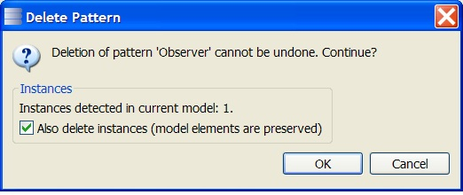

Pattern deletion
The pattern can be deleted via the “Delete” button. When the user clicks the button, a confirmation dialog pops up. If the pattern has instances in the current model, those instances can be deleted together with the pattern. Note that deleting the instances removes the relationship between the model and the pattern, but this action does not modify the contents of the model
(see section “The “Delete” button”).
